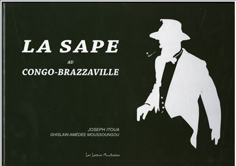
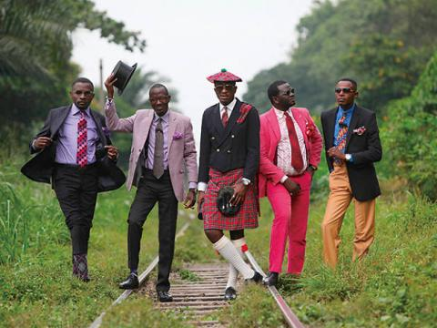
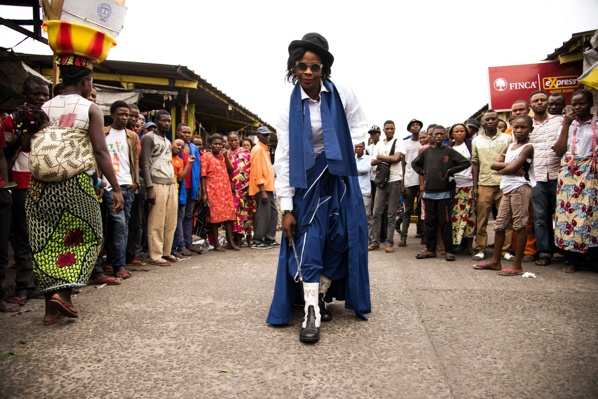

La société des ambianceurs et des personnes élégantes (plus connue sous l'acronyme S.A.P.E ou sape) est un mouvement culturel et de société originaire de la république du Congo.
Ses adeptes, appelés les sapeurs et parfois black dandies, s'habillent chez les grands couturiers ou font concevoir leurs vêtements sur le même modèle, puis paradent dans la rue ; ils pratiquent la « sapologie », art de bien se « saper ».
Histoire


L'origine de la sape est mal connue. Les sapeurs se revendiquent plus ou moins des dandys européens du XIXe siècle, et pourraient avoir commencé leur activité dans les années 1920. À l'époque, il s'agit d’une façon d’imiter le colonisateur en accaparant son style vestimentaire et ses manières, d’une part pour être intégré dans leurs sphères, mais aussi par provocation[5].
La sape prend son essor après la seconde guerre mondiale, quand les soldats et étudiants congolais de retour d'Europe rentrent chez eux en rapportant la mode parisienne[6],[7],[4]. Le quartier de Bacongo à Brazzaville est un haut lieu de la sape[3].
Stervos Niarcos est considéré comme le fondateur officiel de la sape moderne et de la religion « kitendi » (habillement en lingala)[8], tandis que Papa Wemba démocratise le mouvement[6]. Certaines sources supposent que le terme de sape est inventé par Papa Wemba lui-même[3]. Un autre possible inventeur du terme est Christian Loubaki, homme à tout faire travaillant dans le quartier huppé du seizième arrondissement à Paris, qui aurait observé ses employeurs s'habiller et aurait profité des vieux vêtements qu'ils lui offraient[9].
La sape se popularise réellement au cours des années 1960 à Brazzaville puis à Kinshasa, avant de se développer ensuite dans les diaspora congolaises, en France et en Belgique[10],[11]. Elle gagne ensuite en popularité au Cameroun, au Gabon ou encore en Côte d'Ivoire.
En 1971, le président Mobutu, au Zaïre, interdit le costume-cravate, une interdiction qui vise à montrer son rejet de l’impérialisme occidental[12]. Il fait la promotion de l'abacost, un costume masculin porté sans chemise ni cravate. Dans les années 1980, des campagnes ont visé à interdire les sapeurs dans l’espace public[5] ; le choix de ceux-ci d'importer des costumes de l'étranger est une contestation de la dictature de Mobutu, au point qu'ils sont vus comme des menaces par le pouvoir[11]. À la levée de l'interdiction en 1990, l'art de la sape reste une revendication politique en République démocratique du Congo[7].
Une première étude sociologique est menée en 1984 par Justin-Danuel Gandoulou[13],[14]. La même année, la Maison des Étudiants Congolais devient le berceau de la sape en France. C'est cette arrivée en France qui en fait le point de départ principal de la Sape internationale.
En 1986, le film Black Mic-Mac fait découvrir la sape dans de nouveaux pays.
Dans les années 2000, la sape gagne en reconnaissance dans le monde entier[6],[15]. Au début des années 2000, le ministre des communications de la république du Congo Alain Akouala Atipault, amateur de sape, la pratique et la fait connaître à l'étranger.
En 2010, Paul Smith crée une collection inspirée des sapeurs. En France, une exposition est consacrée au genre au Palais de Tokyo en 2015 Une soirée sape est organisée pour la première fois en décembre 2018 à Montréal. Aux Jeux de la Francophonie de 2023, la cérémonie d'ouverture inclut un spectacle de sapeurs[15].
Dans les années 2010, on estime que plusieurs milliers de sapeurs défilent à Kinshasa[8].
Concept
Style vestimentaire et défilés :
L'art de la sape consiste à s'habiller le mieux possible, généralement en achetant les vêtements les plus chers possibles dans des grandes maisons de luxe. Le sapeur parade ensuite dans les rues vêtu de ses meilleurs vêtements[3], cherchant à avoir un style personnel unique[5]. Parfois, les sapeurs arrêtent la circulation pour s'asseoir sur le capot de voitures, un spectacle généralement apprécié même par les conducteurs[2].
Le style vestimentaire se reconnaît le plus souvent au port d'un costume trois-pièces bigarré accompagné d'accessoires comme des cannes dorées et des chapeaux à motif léopard[15].
En république démocratique du Congo, un défilé a lieu à Kinshasa chaque année le 10 février pour célébrer la sape : c'est le jour de l'anniversaire du décès de Stervos Niarcos[8].
Revendication sociale
La philosophie d'origine de la sape est l'idée que s'habiller comme une personne respectable poussera les autres à respecter le sapeur lui-même[15]. De nombreux sapeurs sont traités comme des célébrités locales[5].
La philosophie de la sape s’accompagne de « dix commandements » fondamentaux, qui régissent le comportement des sapeurs et sapologues et résument leurs valeurs. Les commandements soutiennent la sapologie, mais ajoutent aussi des injonctions à l'hygiène, contre les discriminations et les violences, ou encore un appel à "coloniser les peuples sapophobes"[20]. La non-violence est au cœur du mouvement[7].
La sape est un divertissement, mais aussi un symbole d'émancipation post-coloniale, créant la figure d'un Noir élégant et libéré[6]. Elle sert à prendre sa revanche sur le pouvoir en place et à protester contre la situation économique du pays, en plus de permettre aux habitants d'oublier temporairement leurs problèmes[5]. Certains commentateurs dont Jocelyn Armel estiment que la sape a joué un rôle dans la réunification de la République démocratique du Congo[16].
Désignée comme l'art de s'habiller avec élégance, extravagance et originalité, la sapologie est désormais un symbole de l'identité sociale des Congolais. Cependant, une grande partie de la population de la République démocratique du Congo (RDC) survit en deçà du seuil de pauvreté, gagnant moins d'un dollar américain par jour[21].
La sapologie est un véritable mode de vie, né d'un désir de transformer la perception des classes sociales. C'est une revendication qui réclame les promesses de richesse que le sous-sol de la république démocratique du Congo a faites à sa population. Ce mouvement transnational, la Sape, s'approprie les styles des grandes métropoles européennes et les réinterprète en Afrique, utilisant le corps comme un moyen d'expression pour faire face aux défis socio-économiques[22].
Il ne s'agit pas seulement d'une appropriation subversive ou passive de la mode, mais plutôt d'un moyen par lequel celle-ci est utilisée comme un outil de décolonisation, permettant de créer des identités alternatives qui défient toute forme de catégorisation[23].
Place des femmes dans le mouvement

Si le mouvement est traditionnellement masculin, les femmes sont les bienvenues dans le mouvement et leur nombre croît[6]. La première sapeuse connue est Mama Afrika[24].
Place dans les médias
Hector Mediavilla a passé huit ans à photographier des personnages clés de cette scène congolaise dans sa série « SAPE : Society of Ambianceurs and Elegant People ». Alain Mabanckou, écrivain congolais, tire l’analyse suivante de l’œuvre du photographe :
« Si d’aucuns perçoivent la Sape comme un simple mouvement de jeunes Congolais qui s’habillent avec un luxe ostentatoire, il n’en reste pas moins qu’elle va au-delà d’une extravagance gratuite. Elle est, d’après les Sapeurs, une esthétique corporelle, une autre manière de concevoir le monde et, dans une certaine mesure, une revendication sociale d’une jeunesse en quête de repères. Le corps devient alors l’expression d’un art de vivre[25]. »
Le photographe congolais Baudouin Mouanda leur a également consacré une série de photos en 2008, Sapologie, qui a rencontré un succès planétaire[26], ainsi qu'une autre en 2022 intitulée La SAPE, le Rêve d'aller-retour, exposée dans plusieurs endroits du Grand Paris (France), dont le Musée Carnavalet[27].
Solange Knowles se passionne pour la sape et fait intervenir des sapeurs dans le clip de sa chanson Losing You[24].
Géopolitique
La sape est un outil de soft power congolais.